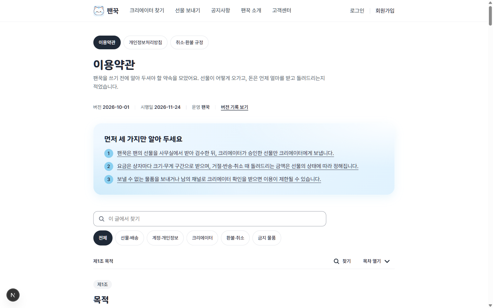
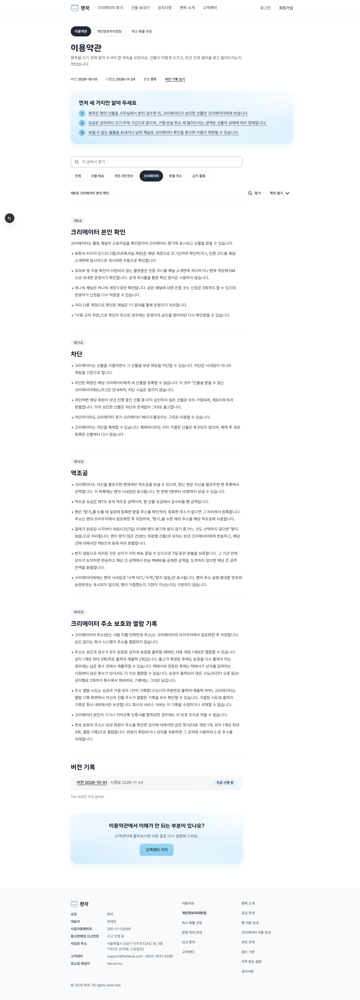
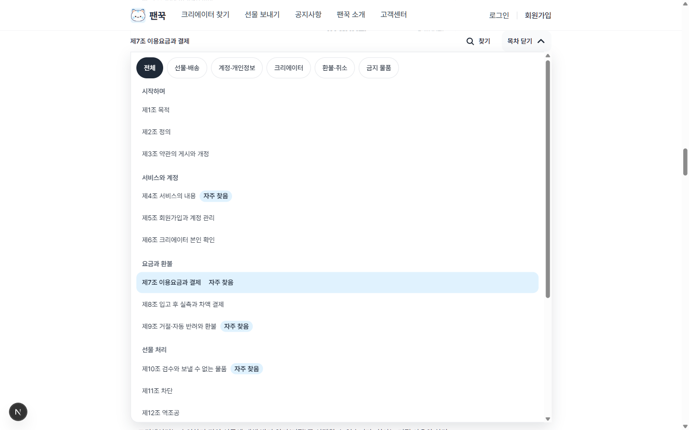
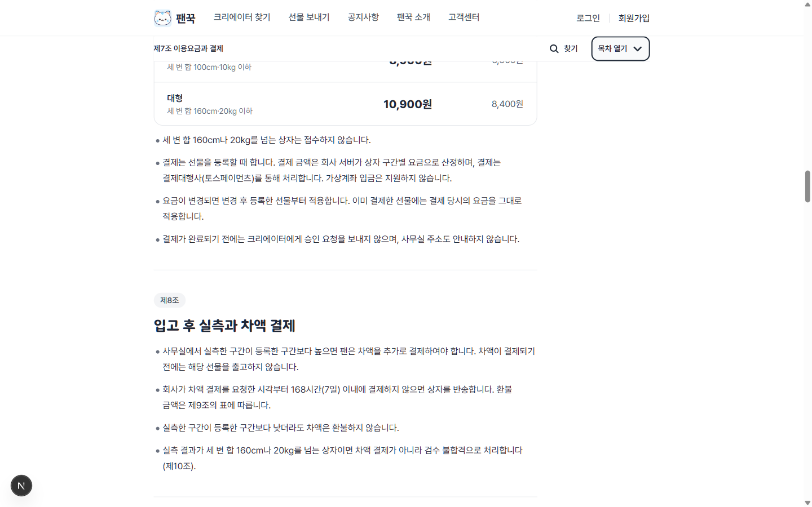
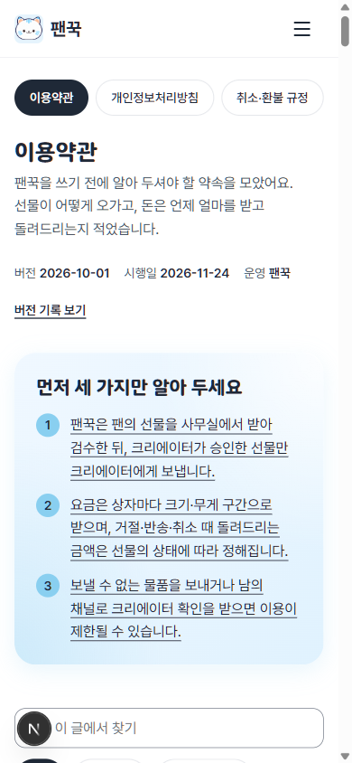
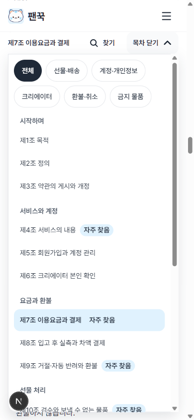

/terms — 데이터 표 초안을 넣은 미리보기 (확정 전, 커밋하지 않음)
2026-10-23 localhost:3000 로그인 전. 칩 다섯 · 요약 줄 링크 · 자주 찾음 배지가 이 초안 데이터로 생긴 것이다.
1. 첫 화면 1440 — 요약 세 줄이 링크(밑줄), 검색칸 아래 분류 칩 다섯
2. 「크리에이터」 칩 — 제6·11·12·15조만 남음(전체 페이지)
3. 글 가운데서 「목차 열기」 — 칩 줄 · 묶음 · 지금 조 칠함 · 자주 찾음 배지
4. 조 제목 옆 「자주 찾음」 배지
5. 휴대폰 390 첫 화면
6. 휴대폰 390 목차 열기